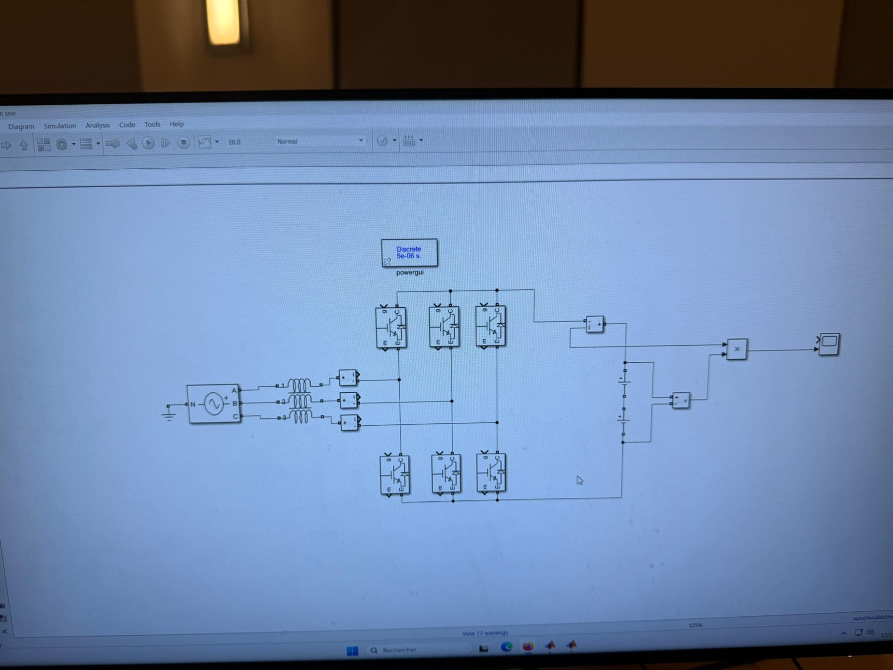
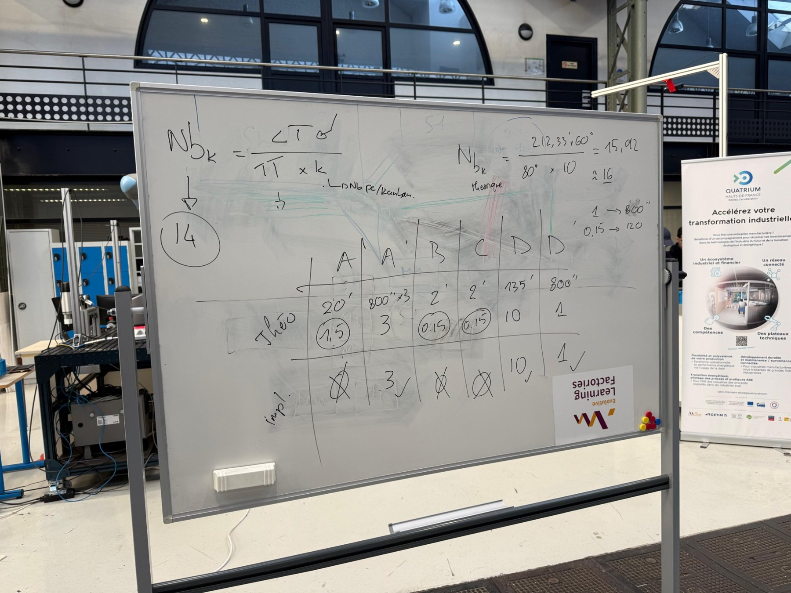

POWER ELECTRONICS · TEAM PROJECT · 2026
AI-Inspired Control of Modular Multilevel Converters
Study and comparison of control strategies for a modular multilevel converter, including classical, hybrid and optimization-based approaches.
MATLABControl SystemsOptimizationPower Electronics

PROJECT OVERVIEW
From challenge to engineering analysis
Model and evaluate
Simulated an MMC architecture and compared nearest-level modulation, balancing algorithms, simulated annealing and genetic optimization using engineering performance criteria.
Compare trade-offs
Analyzed switching behavior, converter losses and voltage quality to identify trade-offs between control policies.
Scope: This was a collaborative Arts et Métiers research project; the attached report documents the full team methodology.
